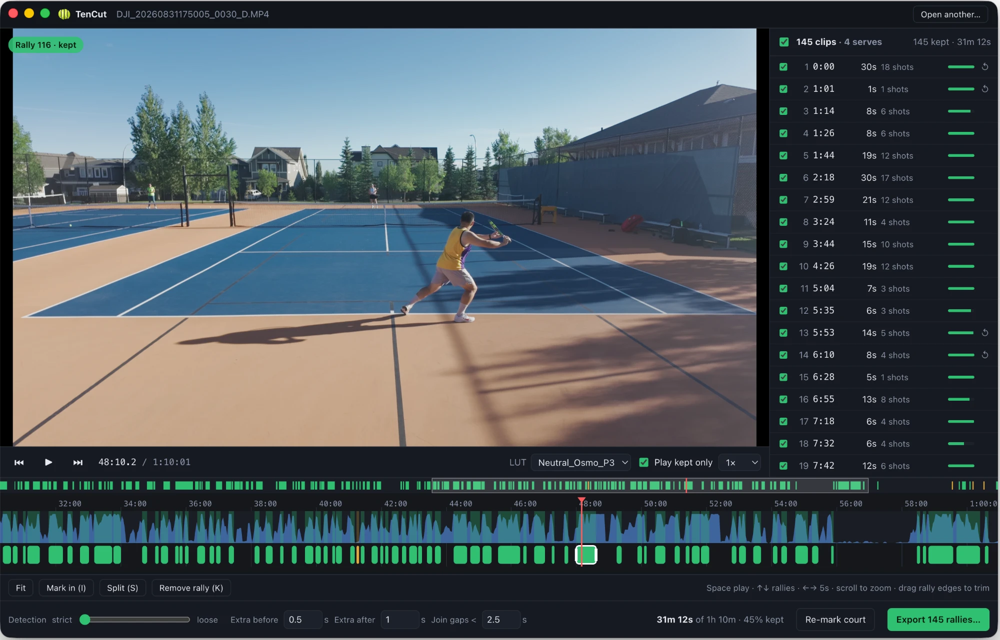
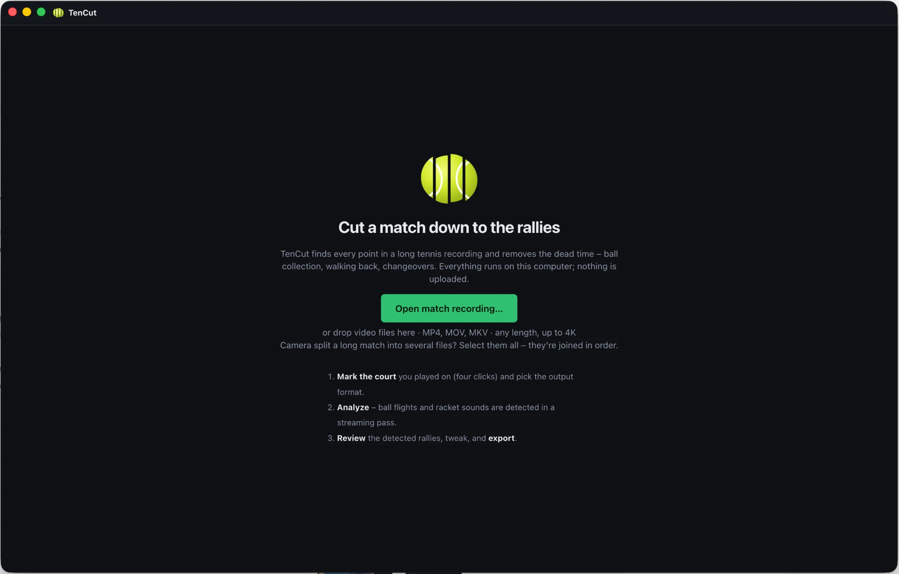
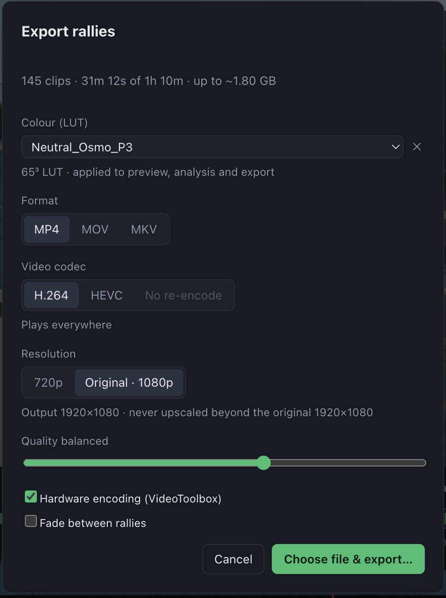

1
Open your recording
Drop in one file or all the parts of a split recording – MP4, MOV or MKV, any length, up to 4K 10-bit.
Mark the court you played on and choose the output format.
TenCut finds every point in a long match recording – serves, faults and rallies – and cuts out the dead time: ball collection, walking back, changeovers. Review, tweak, export. Everything runs on your computer.
Free · all releases

A 70-minute match: 145 points found, 31 minutes kept. Every clip can be previewed, trimmed or removed.
One camera on a fence, other courts in the background, an hour or more of 4K. That's the footage TenCut is made for.
Tracks the ball, follows both players' strokes with a pose model and listens for racket hits – then snaps each clip from just before the serve to when the last shot lands.
Detects the toss and serve, so faults stay in your edit too – the whole match, minus the waiting.
Mark your court with four clicks; balls and players on neighbouring courts are left out.
Shoot D-Log or S-Log? Load a .cube LUT once – it's applied to the preview, the analysis and the export, and remembered for next time.
Cameras split long recordings into several files. Open them together and TenCut treats them as one continuous match.
No uploads, no account. Hardware-accelerated decoding and encoding; a 1-hour 4K match is analysed in minutes.
Three steps from a 17 GB recording to a highlights-length video of the whole match.
Drop in one file or all the parts of a split recording – MP4, MOV or MKV, any length, up to 4K 10-bit.
Mark the court you played on and choose the output format.

Every detected point is listed and drawn on the timeline.
H.264 or HEVC, MP4/MOV/MKV, from 720p up to the original resolution – never upscaled. Your LUT is applied, and hardware encoding keeps it fast.
Or skip re-encoding entirely for the fastest, original-quality cut.

TenCut isn't signed with paid developer certificates yet, so your system asks once before the first launch.
Open the .dmg and drag TenCut to Applications. On first launch, right-click the app → Open → Open.
Run the installer. If SmartScreen appears, click More info → Run anyway. An NVIDIA, Intel or AMD GPU is used for fast exports when available.